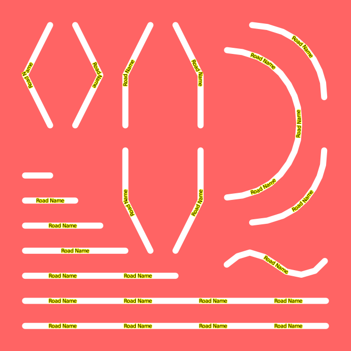

Text Symbolizer¶
Symbolizer that specifies rendering of text at a point or along a line (for example, for a road name).

Configuration Options¶
Options for whole Symbolizer¶
parameter |
values/ type |
description |
unit |
default |
version |
|---|---|---|---|---|---|
spacing |
double |
Space between repeated labels. If spacing is 0 only one label is placed. |
px |
0 |
|
label-position-tolerance |
double |
Allow labels to be moved from their point in line placement. Lower values indicate that Mapnik tries less positions and generally leads to fewer labels. Higher values lead to Mapnik trying more different positions along a line to find a free spot. If unset or 0, Mapnik sets this value based on the total length of the line to ensure enough labels are placed. |
? |
0 |
|
force-odd-labels |
true, false |
Force an odd amount of labels to be generated. |
bool |
false |
|
max-char-angle-delta |
double |
Maximum angle (in degrees) between two consecutive characters in a label allowed. The lower the number the fewer labels placed - this is to stop placing labels around sharp corners. |
degree |
22.5 |
|
halo-rasterizer |
fast, full |
(Only for AGG renderer) Choose between good and fast halo rasterizer. Both produce equally good results for halo-radius <= 1.0. Only full rasterizer supports fractional values > 1.0. Other values are truncated by fast rasterizer (e.g. 1.8px = 1px). Visual comparision |
full |
git only (2013-04-25) |
|
displacement |
(x,y)/tuple |
Move text position by this many pixels |
px |
(0,0) |
2.1 |
avoid-edges |
true, false |
Boolean to avoid labeling near intersection edges |
bool |
false |
|
margin |
double |
Minimum distance that a label can be placed from any other label or shield (works across features) |
px |
0.0 |
3.0 |
repeat-distance |
double |
Minimum distance between repeated labels such as street names or shield symbols (works across features) |
px |
0.0 |
3.0 |
allow-overlap |
true, false |
Allow labels to overlap other labels - Note: you can also clear the label collision cache at the LAYER level to promote more overlap. See 'clear-label-cache' at XMLConfigReference part layer |
bool |
false |
|
placement |
line, point, vertex, interior |
"line" to label along lines instead of by point. TODO: Document other options. |
point |
||
opacity |
double |
1 is fully opaque while zero is fully transparent and .5 would be 50% transparent |
1 |
||
minimum-padding |
double |
if >0 helps prevents a label (or shield) from being placed too near the edge of the map. |
px |
0.0 |
|
minimum-path-length |
double |
place labels only on paths longer than this value. |
px |
0.0 |
|
placement-type |
dummy, simple, list |
Placement finder algorithm. Currently supported: "dummy" (one placement only), "simple" (automatically create new positions using a simple configuration; see below) and "list" (mapnik >=2.1, see below) |
string |
dummy |
2.0/2.1 |
placements |
string |
List of possible placements. Only valid if placement-type="simple" is used. See below for syntax. |
"X" |
2.0 |
|
upright |
left, right, auto, left_only, right_only |
Select which way direction is used to place characters upright. The XXX_only variants place text only if more than 50% of all character are upright. Together with placement-type="list" this can be used to implement alternate texts. See below for an example. |
auto |
harfbuzz |
|
clip |
true, false |
If true then the geometry is clipped to the view before doing placements. Improves performance but can cause bad placements when the results are used for tiling |
bool |
true |
2.0.0 |
largest-bbox-only |
true, false |
controls default labeling behavior on multipolygons. The default is |
bool |
true |
2.1 |
comp-op |
none |
2.1 |
{kind=link}
Text layout options¶
parameter |
values/ type |
description |
unit |
default |
version |
|---|---|---|---|---|---|
dx, dy |
double |
Displace label by fixed amount on either axis. Actual displacement also depends on vertical-alignment and horizontal-alignment |
px |
0.0 |
0.7 |
vertical-alignment |
top, middle, bottom, auto |
Position of label relative to point position. "auto" is "middle" for dy=0, "bottom" for dy>0, "top" for dy<0 |
auto |
||
horizontal-alignment |
left, middle, right, auto |
Position of label relative to point position |
auto |
||
justify-alignment |
left, center, right, auto |
Justify multi-line text |
auto |
||
text-ratio |
double |
Try to keep a given height to width ratio. Use 0 to disable this feature. |
ratio |
0 |
|
wrap-width |
double |
Length before wrapping long names. Use 0 to disable this feature. |
px |
0 |
|
wrap-before |
true,false |
Wrap text before wrap-width is reached. If this setting is off your lines will always be a bit longer than wrap-width. If this setting is on the lines will usually be a bit shorter, but can be longer if there is a single word that is longer than your current line limit. |
bool |
false |
|
orientation |
double |
Rotate text. |
degree |
0 |
|
rotate-displacement |
true, false |
Rotates the displacement around the placement origin by the angle given by "orientation". |
bool |
false |
harfbuzz |
Character formatting options¶
parameter |
values/ type |
description |
unit |
default |
version |
|---|---|---|---|---|---|
face-name |
string |
Font name (font must be registered in mapnik or you won't see anything. see UsingCustomFonts) |
|||
fontset-name |
string |
FontSet name |
|||
size |
double |
Font size |
px |
10.0 |
|
fill |
color |
Color of the text fill, e.g. #FFFFFF |
black |
||
halo-fill |
color |
Color of the text halo, e.g. rgba(255,255,255,0.5) |
white |
||
halo-radius |
double |
Radius of the halo in pixels (Fractional pixels are accepted. See halo-rasterizer for limitations.) |
px |
0 |
|
halo-comp-op |
string |
Composition only with the halo |
|||
character-spacing |
double |
Additional horizontal spacing between characters. Currently works for point placement only, not line placement. You will get the normal spacing defined by the font plus this amount of extra space. (Also works for line placements in harfbuzz branch.) |
px |
0 |
|
line-spacing |
double |
Vertical spacing between lines of multi-line labels. This spacing is in addition to the normal font line spacing |
px |
0 |
|
wrap-character |
char |
Use this character instead of a space to wrap long names. (Harfbuzz branch ignores this and uses Unicode rules for line breaks.) |
|||
text-transform |
none, uppercase, lowercase, capitalize |
Allows conversion of text to lower or upper case before display. |
none |
Deprecated options¶
parameter |
values/ type |
description |
unit |
default |
version |
|---|---|---|---|---|---|
name |
expression |
This is the query field you want to use for the label text, e.g. "street_name" (deprecated in Mapnik2, see section "new syntax" below) |
|||
minimum-distance |
double |
Point placement: Minimum distance that a label can be placed from any other label or shield |
px |
0.0 |
Examples¶
XML¶
<TextSymbolizer
face-name="DejaVu Sans Book" size="10" fill="black"
halo-fill="white" halo-radius="1"
placement="line" allow-overlap="false">
[FIELD_NAME]
</TextSymbolizer>
Python (Mapnik 2)¶
t = TextSymbolizer(Expression('[FIELD_NAME]'), 'DejaVu Sans Book', 10, Color('black'))
t.halo_fill = Color('white')
t.halo_radius = 1
t.label_placement = label_placement.LINE_PLACEMENT # POINT_PLACEMENT is default
dir(t) # for the rest of the attributes
Python (Mapnik 3)¶
No support.
C++¶
#include <mapnik/map.hpp>
#include <mapnik/font_engine_freetype.hpp>
using namespace mapnik;
try {
freetype_engine::register_font("/path/to/font.ttf");
/* some code */
rule_type rule;
text_symbolizer ts("[FIELD_NAME]", "DejaVu Sans Book", 10, color(0, 0, 0));
ts.set_halo_fill(color(255, 255, 200));
ts.set_halo_radius(1);
rule.append(ts);
}
The first parameter is the field name of a database field, or from a shape file, or an OSM file. In case of a shape file or OSM file, the field name is case sensitive. You must load the needed fonts first, otherwise you'll get a run time error. But you can load as many true type fonts as you like. Mapnik is coming with a couple of fonts in "mapnik/fonts". I recommend to load all of this fonts, regardless if you need them or not.
Placements¶
In Mapnik 2 the possibility to try different placements if the text can't be placed at the intended position is introduced.
Algorithms:
Simple¶
(This is the only algorithm supported in Mapnik 2.0) It expects a string to specify which positions and size should be used. The format is POSITIONS,[SIZES]. POSITIONS is any combination of N, E, S, W, NE, SE, NW, SW (direction) and X (exact position as give by "displacement") (separated by commas, may not be empty).
[SIZE] is a optional list of font sizes, separated by commas. The first font size is always the one given in the TextSymbolizer parameters.
First all directions are tried, then font size is reduced and all directions are tried again. The process ends when a placement is found or the last font size is tried without success.
For this algorithm horizontal-alignment and vertical-alignment should be set to "auto".
Examples:
"N,S,15,10,8" (tries placement above with font-size give in "size" tag, then below and if that fails it tries placement above with size 15, then blow with size 15, above with 10, ...).
"N,S" (only font size from "size" tag)
"X,10,5" (keep position, but try to reduce size)
Invalid: "10,5" (no position specified)
Note: Whitespace is ignored, e.g. "N,S,15,10" and "N, S,15,10" and "N, S, 15, 10" are equivalent.
An XML example might look like:
<TextSymbolizer
allow-overlap="false"
face-name="DejaVu Sans Book"
placement-type="simple"
placements="N,S,15,10,8"
>[label]</TextSymbolizer>
List¶
(Supported starting with Mapnik 2.1) Here a list of styles is defined and tried one by one till a valid position is found. Each style inherits from the previous one.
It is defined in XML by:
<TextSymbolizer face-name="DejaVu Sans Book" size="16" placement="point" dy="8" fill="blue" placement-type="list">[name]
<Placement size="10" dy="-8" fill="red"/><!-- Reduces text size and changes offset -->
<Placement fill="green">[abbreviated_name]</Placement> <!-- size="10", dy="-8", fill="green", shorter text -->
<Placement fill="orange" dy="8">[nr]</Placement> <!-- size="10", dy="8", fill="orange", shortest text -->
</TextSymbolizer>
(Note [abbreviated_name] and [nr] have to be supplied by the data source!)
New syntax¶
Starting with Mapnik 2.0 a new syntax is used:
<TextSymbolizer name="[label]" />
becomes
<TextSymbolizer>[label]</TextSymbolizer>
This change was made to be forward compatible with changes to text formatting being introduced in later versions.
Alternate texts for upside down rendering¶
If some of your text depends on the line direction you need to supply different texts for each direction. This can be done like this:
<TextSymbolizer face-name="DejaVu Sans Book" size="10"
placement="line" upright="left_only" placement-type="list">
"left only <--"
<Placement upright="right_only">"right only -->"</Placement>
</TextSymbolizer>
New features in Mapnik 3.x¶
upright="auto/left/right" (See table above)
dx is also used for line placements
Multi-line support for line placements
New parameter
rotate-displacement="true/false"Parameters now supported for
lineplacement (that only previously supported forpointplacement): justify-alignment, vertical-alignment, text-ratio, wrap-width, wrap-beforeLine offsets are real offsets instead of fake offsets imitated by calculating the average angle
If dy!="0" you have to set vertical-alignment="middle" to get the same behavior as in previous versions.
Layouts¶
Additional text layouts can be defined in the contents of text symbolizer. Each of these can be assigned any of the text layout attributes listed above. Rather than being alternate placements, each layout is drawn as part of a single placement. This means that all of the text layouts must fit in order for any of them to be drawn. Different configurations of layout nodes can be specified for each alternate placement. Multiple text layouts are compatible with point and line placements.
A simple XML example:
<TextSymbolizer face-name="DejaVu Sans Book" size="12" placement="line">
<Layout dy="-5">[LEFT_NAME]</Layout>
<Layout dy="5">[RIGHT_NAME]</Layout>
</TextSymbolizer>
The above specifies two offset text layouts to be placed along opposite sides of a line.
Formats¶
When you want to change attributes within the text symbolizer, you can use the <Format> element.
Example
<TextSymbolizer placement="point" size="20" face-name="DejaVu Sans Book" fill="black" justify-alignment="center">
[name] + "\n" <Format size="10">"(" + [ele] + ")"</Format>
</TextSymbolizer>
This could result in this:

(See #3158)